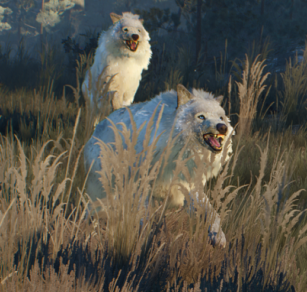

|  |
Bestiary Description:Wolves are wild animals that are commonly found throughout the lands, they are agile creatures that hunt in packs and are fairly intelligent. Being common beasts they are fought with steel weaponry rather than silver weaponry. The creatures run on four legs, have pointed ears, forward eyes, long snouts, sharp teeth, tails, and thick hair covering their bodies. Wolves come in many colors including brown, white, black, and gray. While normally they do not bother humans when food is scarce or in some circumstances they can be driven to attacking humans. Most commonly they are found in forests.
Friend of mine used to say that with all these griffins and basilisks and whatnot, good old fashioned wolves weren't nothing to worry about... Then the damned beasts devoured half his flock. — Yngvar, shepherd
Once upon a time wolves were the absolute rulers of the forest. Men used them to frighten children, while adults, too, trembled at the sound of their howling. Post-Conjunction monsters not only pushed wolves into the deepest wilds but also took over their place in human nightmares. Yet this does not mean the old predators ceased to be a danger. Wolves do not have a drop of magic within them, breathe no fire and spit no acid, but that in no way stops them from killing unwary travelers and hunters.
Particularly dangerous are wargs, a nasty and ferocious subspecies of wolf, and the snow-white wolves which today can only be found in the wild highlands of the Skellige archipelago."
|